Seelisches Wohlbefinden
Angst im Griff – gelassen durch den Alltag
Einfache Techniken zum Innehalten, Atmen und Gedankenordnen für Momente der Anspannung. Mit Übungen, persönlichem SOS-Set und 14-Tage-Plan.
R$ 27,90Details ansehen →
Praktische E-Books als PDF
Caderno Leve gestaltet kurze Ratgeber in einfacher, einfühlsamer Sprache – für deine Gefühle, deine Beziehungen, dein Geld und deinen Alltag. Jedes E-Book enthält Übungen, Checklisten und einen Aktionsplan, mit dem du noch heute anfangen kannst.
Übungen, Checklisten und konkrete Schritte statt komplizierter Theorie.
Einfache, klare Texte ohne Wunderversprechen.
Ein PDF zum Lesen auf Handy oder Computer – oder zum Ausdrucken.
Zahlung und Auslieferung über Kiwify, direkt nach dem Kauf.
90 E-Books verfügbar · weitere Titel folgen in Kürze
Einfache Techniken zum Innehalten, Atmen und Gedankenordnen für Momente der Anspannung. Mit Übungen, persönlichem SOS-Set und 14-Tage-Plan.

Ein Set kurzer Atemübungen, die den Körper überall beruhigen. Techniken von 1 bis 5 Minuten, 14-Tage-Plan und Arbeitsblatt zum Festhalten deiner Fortschritte.

Lerne Meditieren von Grund auf: 4 geführte Anleitungen von 5 bis 15 Minuten zum Lesen oder Aufnehmen mit deiner Stimme, Übungen für den Alltag und ein 21-Tage-Plan.

Praktische Werkzeuge gegen den Kreislauf aus Sorgen und Grübeln: die Schlüsselfrage, Kopf leeren auf Papier, Sorgenzeit und mehr. Mit einem 14-Tage-Plan.

Praktische Übungen, um deinen Wert zu erkennen, deinem inneren Kritiker zu antworten und dich nicht mehr kleinzumachen. Mit Beweis-Tagebuch und 21-Tage-Plan.

Eine tägliche 21-Tage-Challenge mit Aufgaben von 10 bis 20 Minuten, damit du liebevoller mit dir umgehst. Mit Kalender, Arbeitsblatt und Übungen für schwere Tage.

Soziale Netzwerke nutzen, ohne zu glauben, dein Leben sei schlechter als das der anderen: Auslöser, Feed aufräumen, Nutzungsregeln und Werkzeuge gegen das Vergleichen. Mit 14-Tage-Plan.

Ein schrittweiser 4-Wochen-Plan, um deine Handyzeit ohne Radikalität zu verringern und Konzentration, Schlaf und Präsenz zurückzugewinnen. Mit Nutzungslandkarte, Familienabsprachen und Checkliste.

Ein einfühlsamer Schritt-für-Schritt-Weg durch die Trennung: Überlebensset, null Kontakt, Gefühle, neuer Alltag und wann du Hilfe suchen solltest. Mit 30-Tage-Plan.

Übermäßige Bindung verstehen, Verlustangst beruhigen und ausgeglichenere Beziehungen aufbauen. Mit Übungen, Warnzeichen und 30-Tage-Plan.

Kommunikationstechniken, um Konflikte zu lösen, ohne den anderen zu verletzen: sanfter Einstieg, echtes Zuhören, Pause, Wiedergutmachung und Vereinbarungen. Mit 4-Wochen-Plan für Paare.

Ideen, Gespräche und kleine Gesten, um als Paar wieder zueinanderzufinden: Bestandsaufnahme der Beziehung, 30 Date-Ideen, Fragen und eine 30-Tage-Challenge.

Wie du neue Menschen kennenlernst, online und offline, mit weniger Angst vor Zurückweisung: Gespräche, Dating-Apps, erstes Date, Sicherheit und ein 4-Wochen-Plan.

Wie du nach 25 Freundschaften schließt und pflegst, auch mit vollem Alltag: Kontakte wiederbeleben, Orte zum Kennenlernen, Einladungen, Rituale und ein 30-Tage-Plan.

Halt und praktische Wege durch die Trauer: was normal ist zu fühlen, Wellen der Sehnsucht, Schuld, schwere Tage, Kinder und wann du Hilfe suchen solltest.

Begleitung für alle, die ein Haustier verloren haben: Schuldgefühle und Einschläfern, Abschied und Rituale, Kinder, andere Tiere im Haushalt, Erinnerungen und ein Erinnerungsblatt.

Erkenne die Anzeichen von Erschöpfung, mach eine Selbsteinschätzung, setz Grenzen und stell einen Plan auf, um deine Energie zurückzugewinnen. Ersetzt keine ärztliche Untersuchung.

Praktische Strategien für Druck, schwierige Vorgesetzte und zu viele Aufgaben: Priorisierung, Gesprächsleitfäden, Beruhigungstechniken und ein 4-Wochen-Plan.

Schütze deine Freizeit und bring Arbeit, Familie und Erholung in Einklang: Zeit-Check, Arbeitszeitgrenzen, Aufgabenteilung, Freizeit, die auflädt, und ein 4-Wochen-Plan.

Ein 7-Nächte-Plan mit Routine und Gewohnheiten der Schlafhygiene für ruhigere Nächte. Mit Schlaftagebuch, Checklisten und Abendritual.

Konzentrations- und Organisationstechniken für alle, die sich leicht ablenken lassen: günstige Umgebung, kurze Blöcke, zerlegte Aufgaben und externe Organisation. Ohne Diagnose.

Einfache, forschungsbasierte Methoden, um Aufgaben anzufangen und zu Ende zu bringen, was du begonnen hast: erster Schritt, Wenn-dann-Pläne, Fristen und Selbstmitgefühl.

Wie du gute Gewohnheiten aufbaust und schlechte loswirst – mit kleinen täglichen Schritten: Mini-Gewohnheiten, Anker, eine unterstützende Umgebung und ein 30-Tage-Kalender.

Wie du dranbleibst, auch wenn die Lust weg ist: dein Warum, Ziele mit WOOP, Systeme, ein Minimaltag, Gesellschaft und Selbstmitgefühl.

Lerne, deine Gefühle im Job und zu Hause zu erkennen und mit ihnen umzugehen: Gefühlslandkarte, Anzeichen im Körper, STOP-Technik, Empathie und Gewaltfreie Kommunikation.
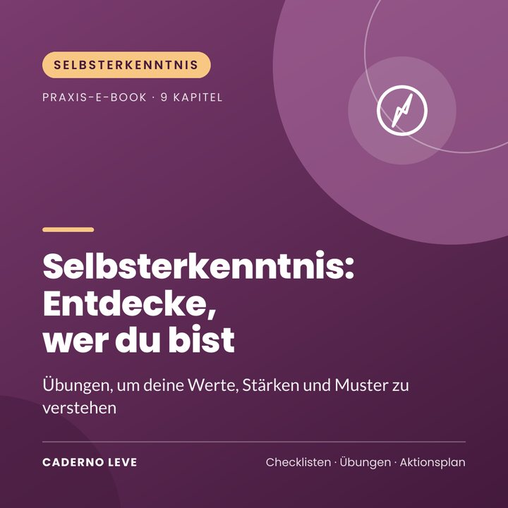
Übungen, um deine Werte, Stärken und Muster zu verstehen: Lebenslinie, Werte, Charakterstärken, Big Five, Energietagebuch, Johari-Fenster und Lebensrad.
Techniken, um in Meetings, Präsentationen und Videos sicher zu sprechen: mit Lampenfieber umgehen, die Rede strukturieren, üben, Stimme und Körper, Blackouts und schrittweises Training.
Schritt für Schritt natürlicher reden und auf andere zugehen: den Kreislauf der Schüchternheit verstehen, Gespräche beginnen und halten, deine Meinung sagen und in Gruppen zurechtkommen.
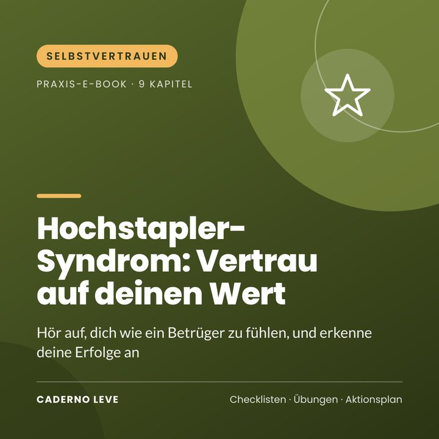
Hör auf, dich wie ein Betrüger zu fühlen, und erkenne deine Erfolge an: der Hochstapler-Kreislauf, die fünf Typen, die Beweismappe, Lob annehmen und Perfektionismus.
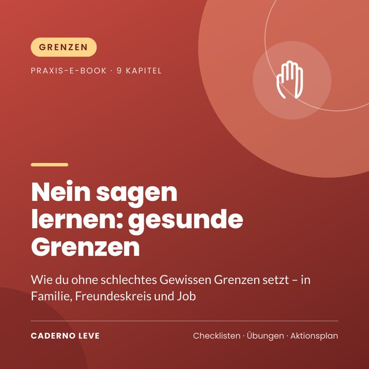
Wie du ohne schlechtes Gewissen Grenzen setzt – in Familie, Freundeskreis und Job: Arten von Grenzen, Selbstsicherheit, fertige Sätze und der Umgang mit Schuldgefühlen.
Übungen, um dich von Kränkungen zu befreien und leichter weiterzugehen: was Vergeben ist und was nicht, das REACH-Modell, nicht abgeschickte Briefe, Versöhnung und Selbstvergebung.
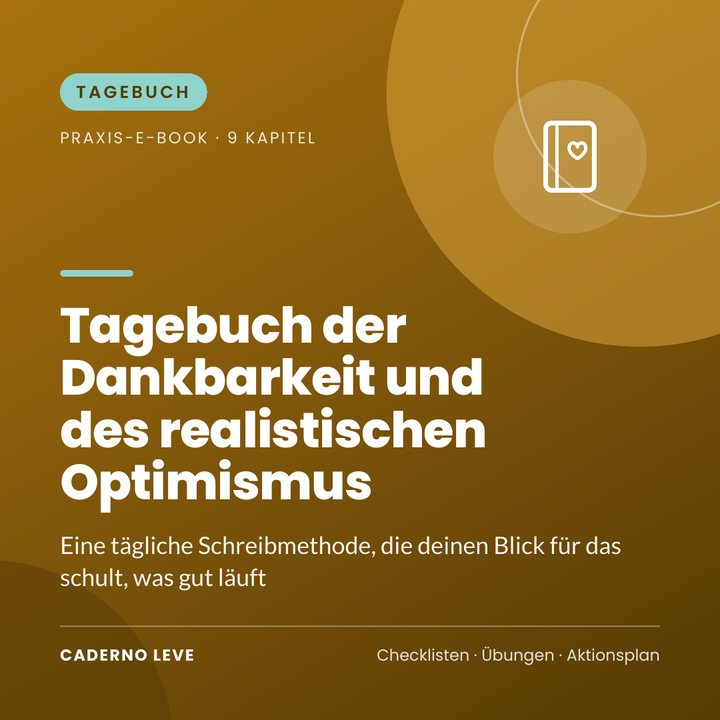
Eine tägliche 5-Minuten-Schreibmethode, die deinen Blick für das schult, was gut läuft: drei gute Dinge, Genießen, Dankbarkeitsbrief und realistischer Optimismus.
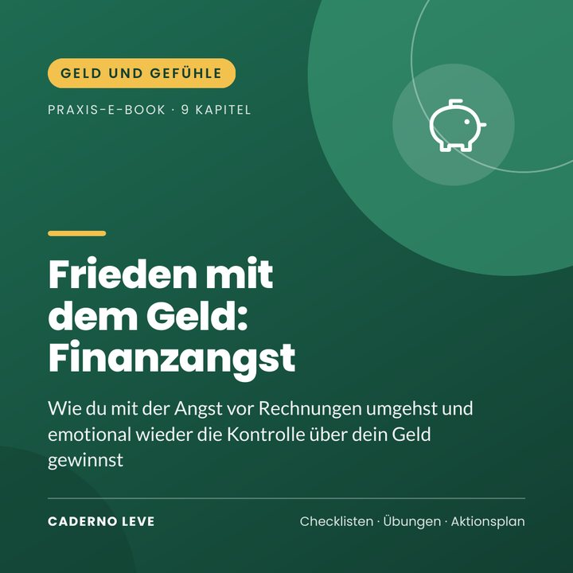
Wie du mit der Angst vor Rechnungen umgehst und emotional wieder die Kontrolle über dein Geld gewinnst: Bestandsaufnahme in Ruhe, Budget fürs Wesentliche, Schulden verhandeln und auf die Psyche achten.
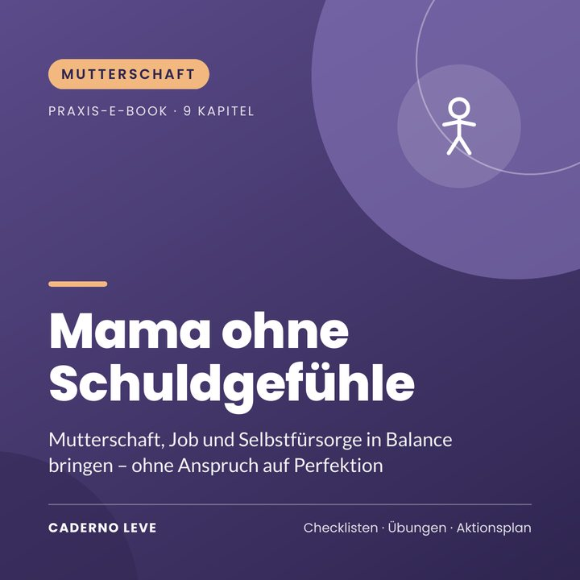
Mutterschaft, Job und Selbstfürsorge in Balance bringen – ohne Anspruch auf Perfektion: nützliche oder ungerechte Schuld, Mental Load, Aufgabenteilung, Unterstützungsnetz und Warnzeichen.
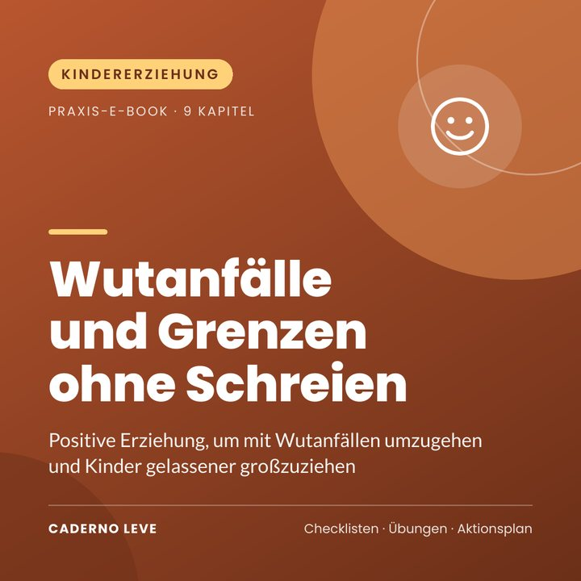
Positive Erziehung, um mit Wutanfällen umzugehen und Kinder gelassener großzuziehen: Vorbeugung, Erwachsenen-Pause, annehmen und begrenzen, Konsequenzen ohne körperliche Strafen und positive Aufmerksamkeit.
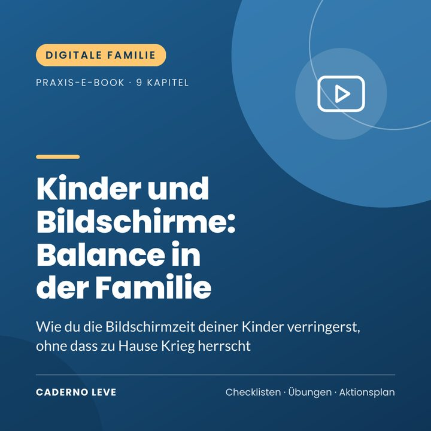
Wie du die Bildschirmzeit deiner Kinder ohne Streit verringerst: Empfehlungen der Kinderärzte nach Alter, Mediennutzungsplan, Übergänge, Alternativen, Sicherheit im Netz und Jugendliche.
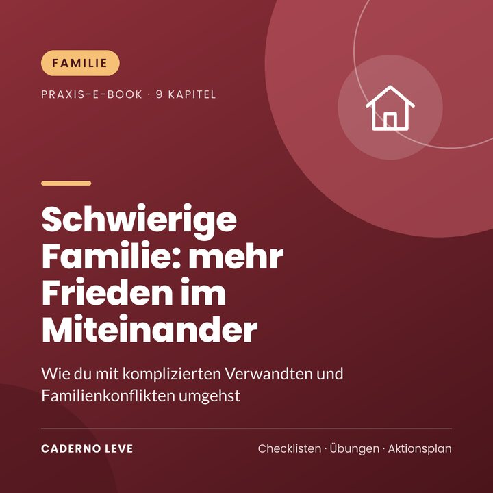
Wie du mit komplizierten Verwandten und Familienkonflikten umgehst: Muster, Dreiecke, Familientreffen, schwierige Gespräche, Grenzen ohne Bruch, ältere Eltern und wann Abstand nötig ist.

Verstehe, woher Eifersucht kommt, und lerne, dir selbst und deinem Gegenüber mehr zu vertrauen: gewöhnliche oder besitzergreifende Eifersucht, Wurzeln, Gedanken, Kontrollzwang, Ruhe-Set und Gespräch.
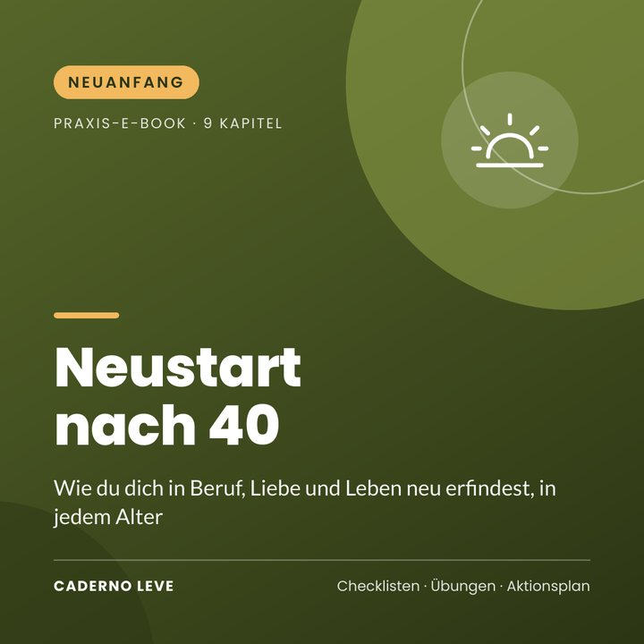
Wie du dich in Beruf, Liebe und Leben neu erfindest, in jedem Alter: Bilanz, Ängste, beruflicher Wechsel durch Experimente, Lernen, Gesundheit, Finanzen und 90-Tage-Plan.
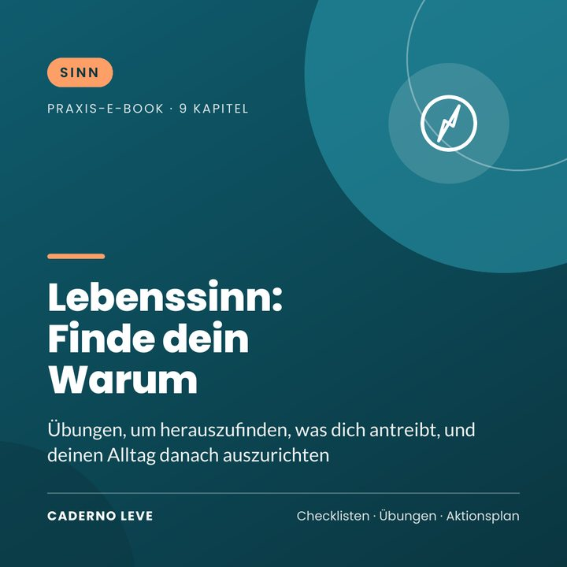
Übungen, um herauszufinden, was dich antreibt, und deinen Alltag danach auszurichten: Werte, Stärken, Sinngeschichte, Schnittmenge, Experimente und Sinn-Statement.
Praktiken der inneren Verbindung, ohne religiöse Bindung, für mehr Frieden: Präsenz, Atmung, Natur, Dankbarkeit, Mitgefühl, Rituale und Dienst.
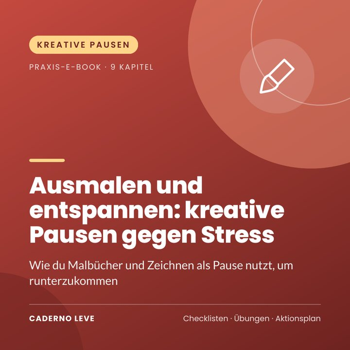
Wie du Malbücher und Zeichnen als Pause nutzt, um runterzukommen: einfaches Set, 15-Minuten-Ritual, Freiheit statt Perfektion, Farben, Doodles und Anti-Stress-Routine.
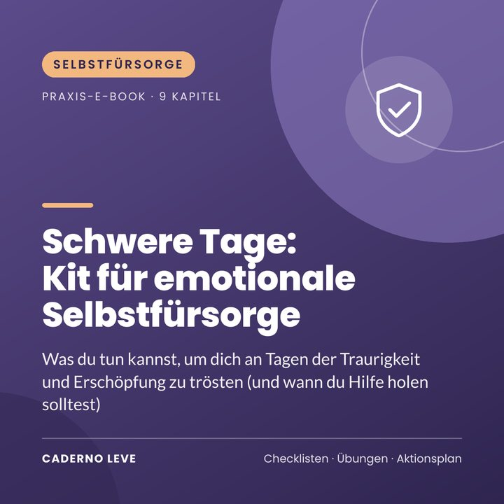
Was du tun kannst, um dich an Tagen der Traurigkeit und Erschöpfung zu trösten: lebensnotwendiges Minimum, Erdung, Bewegung, Verbindung, Krisenplan und persönliches Kit – mit Orientierung, wann du Hilfe holen solltest.
Kurze Pausenroutine für Körper, Geist und Emotionen: Mikropraktiken, Einbau in den Kalender, Plan B und monatliche Überprüfung — ohne Schuldgefühle und ohne unmögliche Routine.
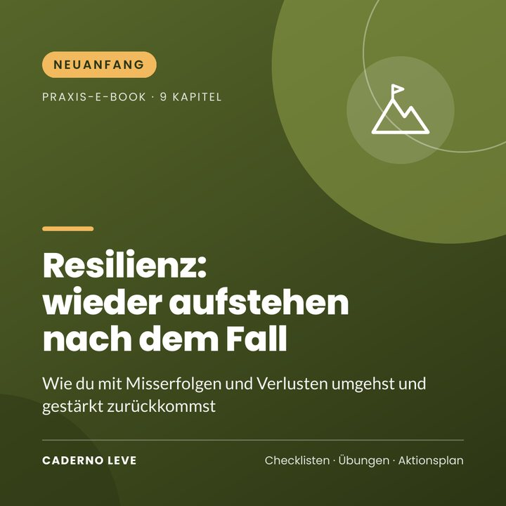
Eine Landkarte, um durch Misserfolge und Verluste zu gehen: emotionale Erste Hilfe, Fakt oder Geschichte, Unterstützungsnetz, Lernen ohne Schuld und der nächste kleine Schritt.
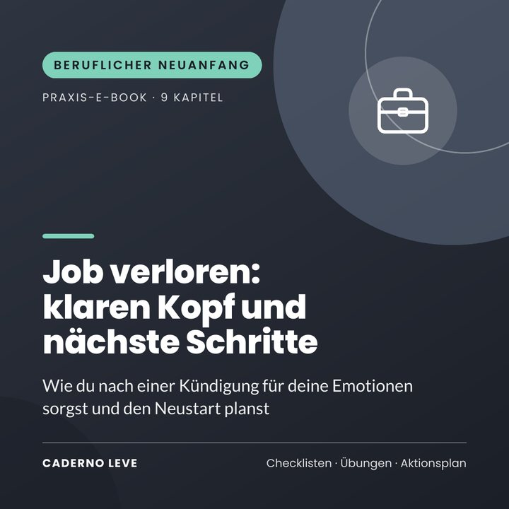
Emotionale Begleitung + praktischer Plan nach der Kündigung: 72 Stunden, Notfallbudget, Suchroutine, Brückeneinkommen und mentale Gesundheit.
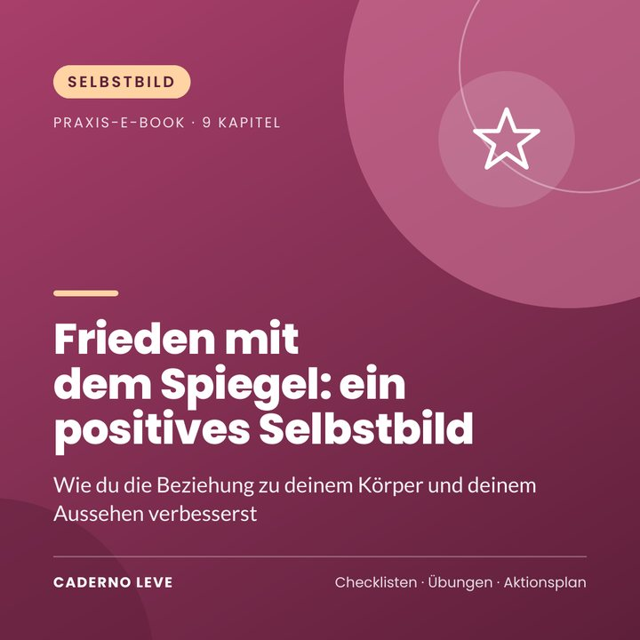
Praktiken, um den Krieg mit dem eigenen Aussehen zu verringern: Respekt vor Liebe, digitale Hygiene, Dialog mit dem Spiegel und eine 14-Tage-Routine.
Körperanzeichen, Notfallpause, Kommunikation ohne Angriff, Wiedergutmachung und 7-Tage-Training im Umgang mit Gereiztheit.
Praktiken für die Reife mit Mut: aktiver Geist, Bindungen gegen Einsamkeit, sichere Bewegung, Sinn und wann Hilfe holen.
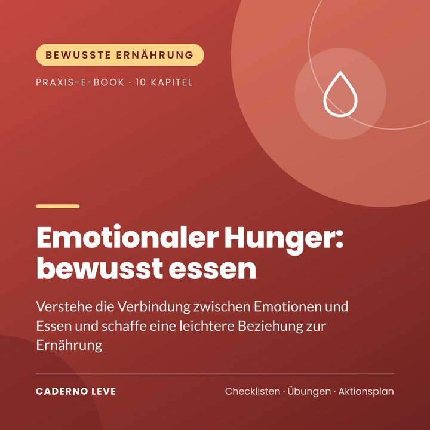
Unterscheide körperlichen und emotionalen Hunger, nutze die 10-Minuten-Pause, baue Alternativen auf und verringere Schuld — ohne Wunderdiät.
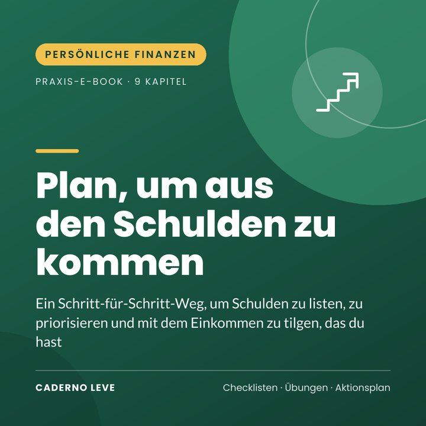
Ein Schritt-für-Schritt-Weg, um Schulden zu listen, zu priorisieren und mit dem Einkommen zu tilgen, das du hast. Mit Tabellen, Verhandlungsleitfaden und 30-Tage-Plan.
Leitfäden zum Verhandeln mit Banken und Läden: Schuldenkarte, realistische Obergrenze, Prioritätsreihenfolge, Anrufskript, digitale Kanäle und Abschluss mit Beleg.
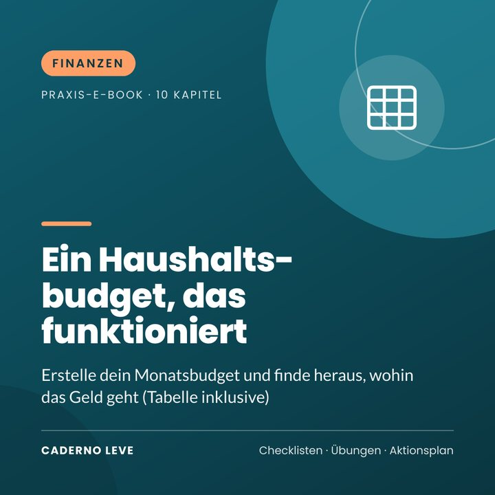
Erstelle dein Monatsbudget in 4 Schritten: notieren, einordnen, planen und überprüfen. Mit .xlsx-Tabelle mit fertigen Formeln und Blättern zum Ausdrucken.
Gib beim Monatseinkauf weniger aus, ohne zu verzichten: Inventur, Speiseplan, Liste nach Gang, Kilopreis, Supermarkt-Fallen, Eigenmarken und null Verschwendung.
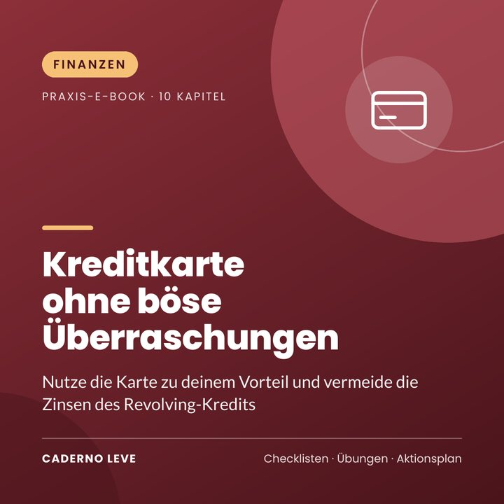
Verstehe Abrechnung, Stichtag, Revolving und Raten. Leg ein persönliches Limit fest, kontrolliere die Abrechnung in 10 Minuten pro Woche und wisse, was zu tun ist, wenn du schon in der Klemme steckst.
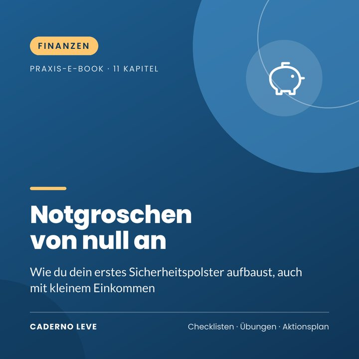
Wie du dein erstes Sicherheitspolster aufbaust, auch mit kleinem Einkommen: wie viel sparen, woher nehmen, wo lassen, wie automatisieren und den Notgroschen schützen.
Finanzielle Grundbildung: Leitzins, Inflation, Sparkonto, Staatsanleihen, Bankeinlagen, Steuern, Risiken und Betrugsmaschen. Ohne Anlageempfehlung.

Verstehe, wie Kredit-Score, positive Zahlungshistorie und Negativeinträge funktionieren, kenne deine Rechte, meide Betrug mit Löschungsversprechen und folge einem 90-Tage-Plan.
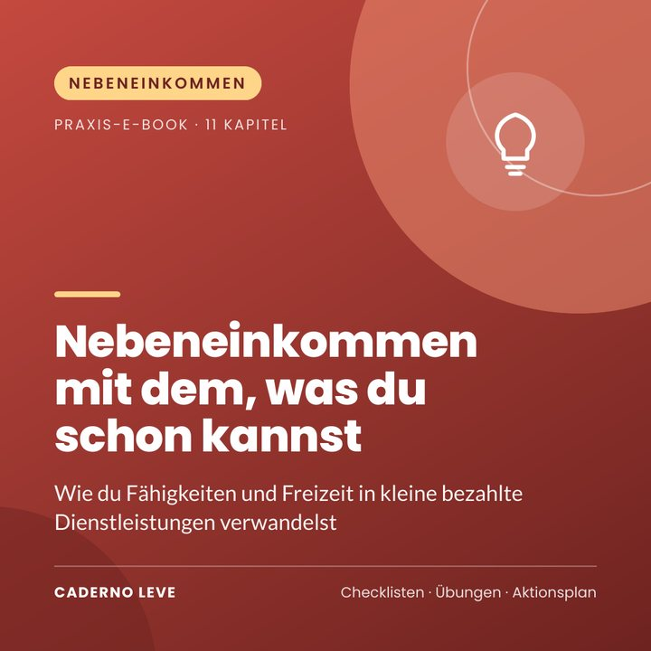
Verwandle Fähigkeiten und Freizeit in kleine bezahlte Dienstleistungen: Fähigkeiten-Check, Wahl der Idee, günstiger Test, fairer Preis, Werbung und 30-Tage-Plan.
Rezepte für Liebeserdbeere, Liebestraube, Brigadeiros, Kuchen im Glas, Palha italiana und Brownie, mit Kostenblatt, Preis, Verpackung, Etikett und Werbung.
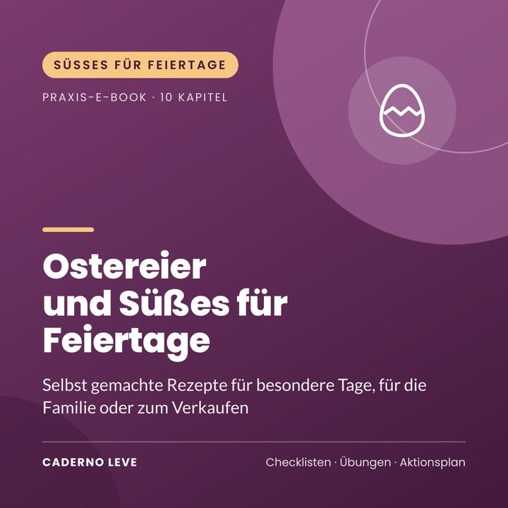
Selbst gemachte Rezepte für Ostern, Muttertag, Valentinstag, Sommerfeste und Weihnachten: Schokolade ohne Rätsel, Löffeleier, Trüffel, Festtagssüßes, Plätzchen und Verkaufstipps.
Praktische Air-Fryer-Rezepte: Kartoffeln, Hähnchen, Fisch, Teigtaschen, Pudding und Kuchen. Mit Zeittabelle, Tipps gegen typische Fehler und Wochenplan.
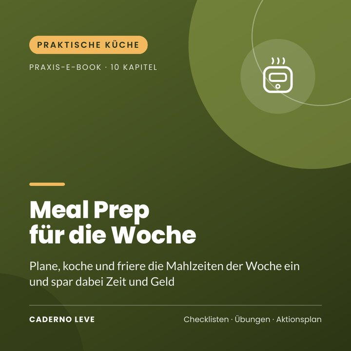
Plane, koche und friere die Mahlzeiten der Woche ein: kombinierbare Basen, Einkaufsliste, Kochablauf, Rezepte, sichere Lagerung und ein Plan für 10 Mahlzeiten.
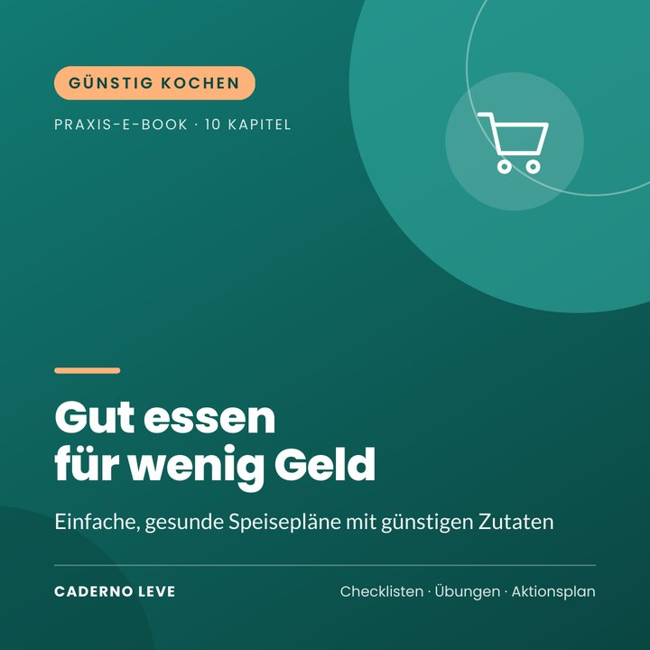
Einfache, gesunde Speisepläne mit günstigen Zutaten: ausgewogener Teller, Preis-Leistungs-Sieger, cleveres Einkaufen, Resteverwertung, Rezepte und 7-Tage-Plan.
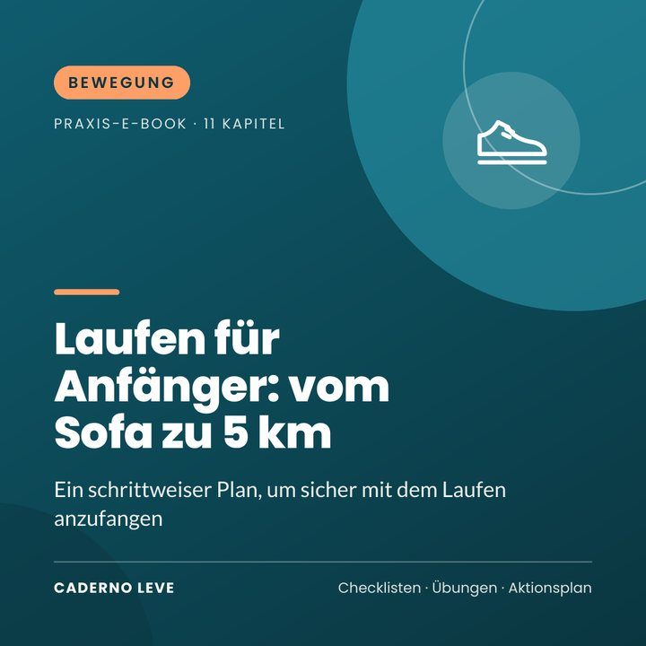
Schrittweiser 9-Wochen-Plan im Wechsel von Gehen und Laufen, mit Aufwärmen, Technik, Verletzungsprävention, Trinken, Motivation und Sicherheit.
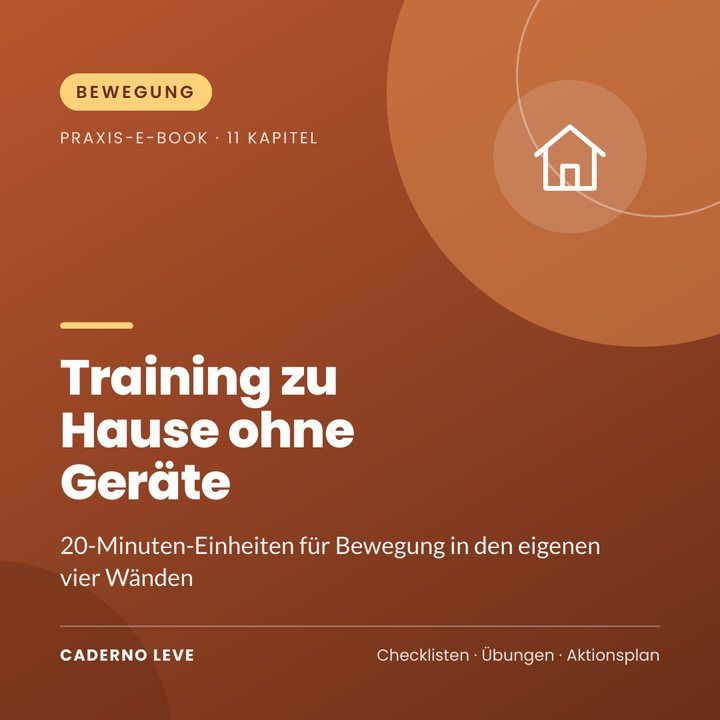
20-Minuten-Einheiten mit dem eigenen Körpergewicht: Übungen erklärt in leichter und schwerer Variante, Aufwärmen, 3 Zirkel, 4-Wochen-Plan und Sicherheitstipps.

Schnelle Übungen gegen Verspannungen im Büro oder Homeoffice: Ergonomie, aktive Pausen, Dehnfolgen von 3, 5 und 10 Minuten und ein 21-Tage-Plan.
Lerne, KI-Assistenten (ChatGPT, Gemini, Copilot und andere) zum Schreiben, Organisieren, Lernen und für Alltagsaufgaben zu nutzen. Mit der KRAFT-Methode, 30 fertigen Prompts und Sicherheitstipps.
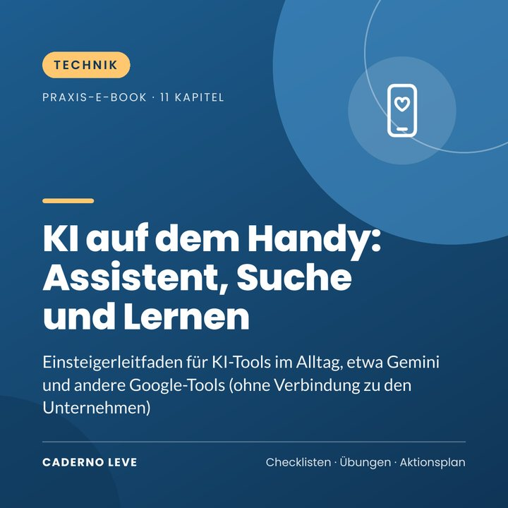
Unabhängiger Leitfaden für KI-Tools im Alltag (etwa Gemini und andere Google-Tools): erste Schritte, gute Anfragen, Suche, Kamera, Lernen mit eigenen Dateien und Datenschutz.
Praktische Methode, um mit künstlicher Intelligenz Bilder und Videos zu erstellen: Prompt-Formel, Stile, Bearbeitung, Serien für soziale Netzwerke, Kurzvideos und Ethik.
Fertige Prompts und Abläufe für KI bei E-Mails, Meetings, Berichten, Tabellen, Prioritäten und Kundenservice, mit Regeln zur Datensicherheit.
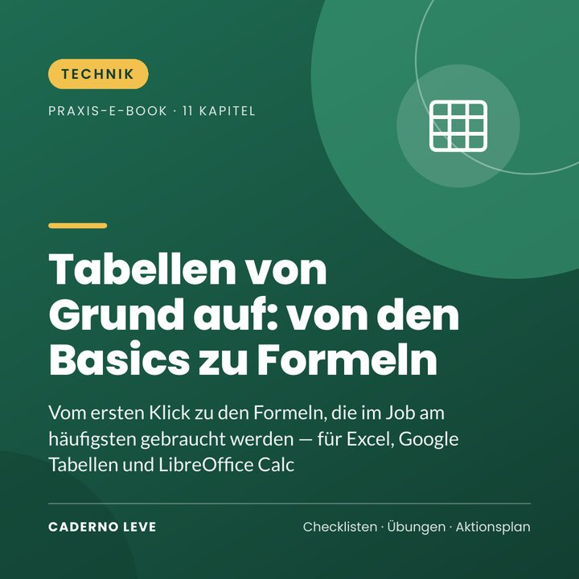
Lerne Tabellenkalkulation von null bis zu den gefragtesten Formeln im Job: WENN, SUMMEWENN, ZÄHLENWENN, SVERWEIS/XVERWEIS, Datum, Filter, PivotTable und Diagramme. Mit Übungsdatei.

Lerne Datenanalyse von Grund auf: gute Fragen, Bereinigung, Mittelwerte, Prozente, Diagramme, Kennzahlen, Fallstricke und die Präsentation von Ergebnissen. Ohne Programmieren.
Lerne Programmierlogik von null an mit Python: Variablen, Entscheidungen, Schleifen, Listen, Funktionen, häufige Fehler und ein Projekt zur Ausgabenübersicht.
Bereite dich mit Musterantworten, STAR-Methode, fertigen Sätzen und einem 3-Wochen-Plan auf Vorstellungsgespräche, Meetings, Videocalls und E-Mails auf Englisch vor.
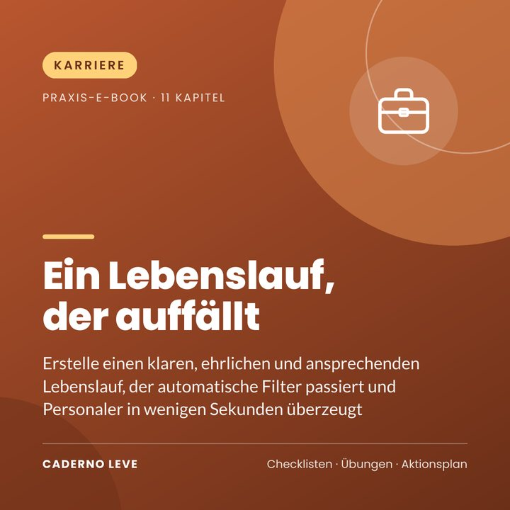
Erstelle einen klaren, ehrlichen Lebenslauf, der automatische Filter passiert und Personaler überzeugt: Struktur, Kurzprofil, Erfahrungen mit Ergebnissen und Anpassung an jede Stelle.
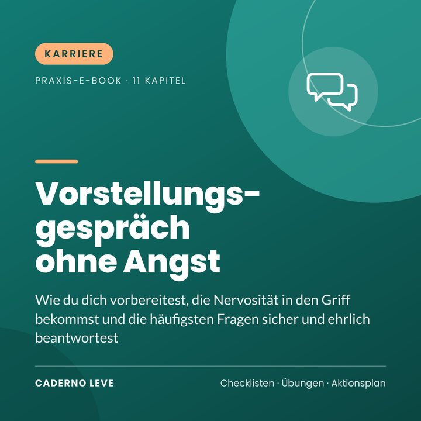
So bereitest du dich auf Vorstellungsgespräche vor: Recherche, Selbstvorstellung, häufige Fragen, STAR-Methode, Nervosität, Videointerview, Gruppenübungen und Gehalt.
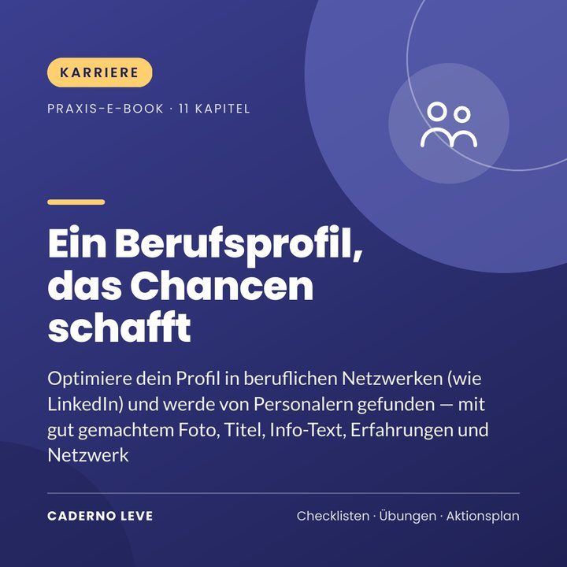
Optimiere dein Profil in beruflichen Netzwerken und werde von Personalern gefunden: Foto, Titel, Info-Text, Erfahrungen, Empfehlungen, Netzwerk und Beiträge.

Erstelle einen realistischen Lernplan für Prüfungen: Analyse der Ausschreibung, Lernzyklus, aktives Lernen, verteilte Wiederholung, Übungsaufgaben, Probeprüfungen und Beständigkeit.
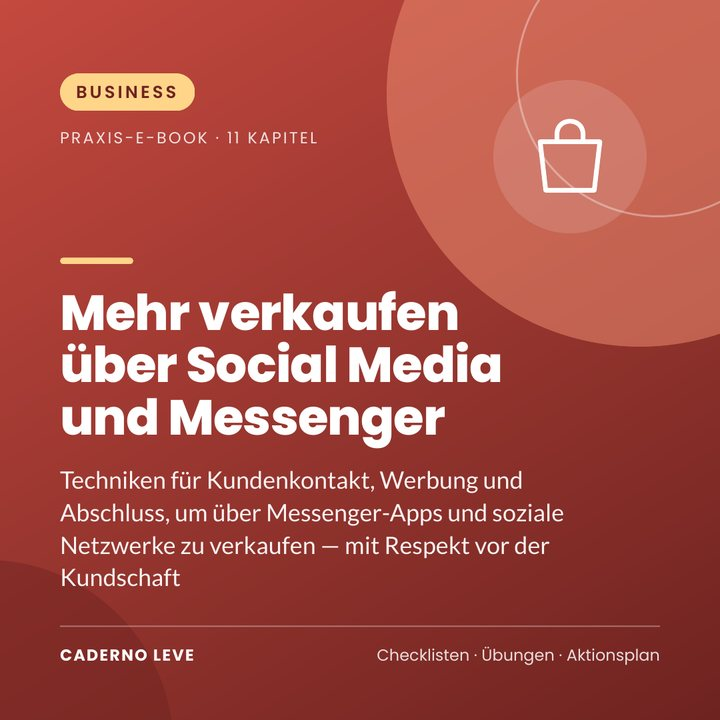
Techniken für Kundenkontakt, Inhalte und Abschluss beim Verkauf über Messenger und soziale Netzwerke: Profil, Antworten, Preis, Einwände, Nachbetreuung und Sicherheit.
Die Grundlagen der Online-Werbung: Zielgruppe, Positionierung, Präsenz auf Karten, Netzwerke, Inhalte, Texte, erste Anzeigen, Kooperationen und Kennzahlen.
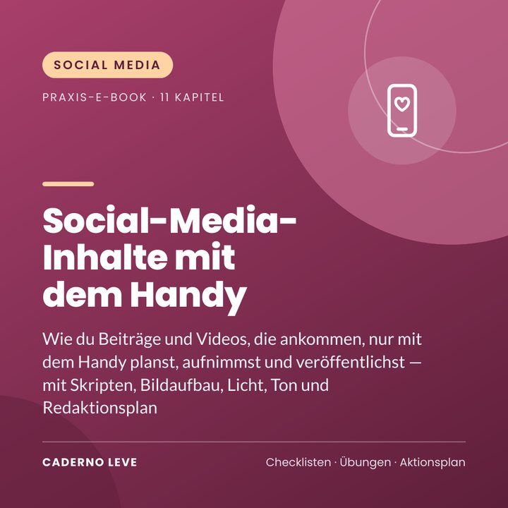
Plane, nimm auf und veröffentliche Inhalte, die ankommen, nur mit dem Handy: Säulen, Aufhänger, Skripte, Bildaufbau, Licht, Ton, Schnitt und Redaktionsplan.
Schneide kurze Hochkantvideos am Handy mit kostenlosen Apps: Schnitte, Rhythmus, Aufhänger, Untertitel, Musik, Effekte, Farbe, Export und ein 20-Minuten-Ablauf.
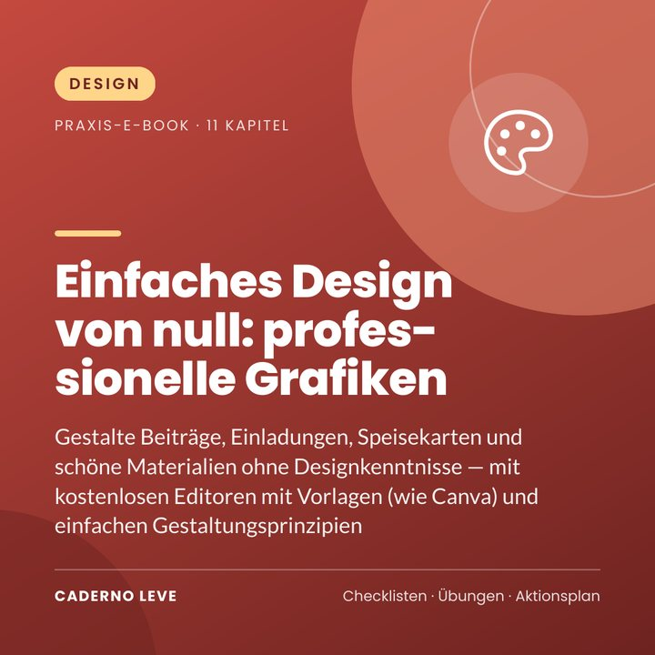
Gestalte schöne Beiträge, Stories, Einladungen, Speisekarten und Präsentationen ohne Designkenntnisse — mit einfachen Prinzipien und kostenlosen Editoren mit Vorlagen (wie Canva).
Fotografiere Produkte professionell nur mit dem Handy: Fensterlicht, selbst gebaute Hohlkehle, Perspektiven, Inszenierung, originalgetreue Bearbeitung und einheitlicher Stil.
Lerne, Betrug bei Echtzeitüberweisungen, Rechnungen, Messengern, Anrufen und Onlinekäufen zu erkennen und zu vermeiden — und was du tust, wenn es dich trifft.
Schritt-für-Schritt-Leitfaden, um das Handy sicher und selbstständig zu nutzen: große Schrift, Anrufe, Nachrichten, Videoanrufe, Fotos, offizielle Dienste, Onlinebanking und Betrugsschutz.
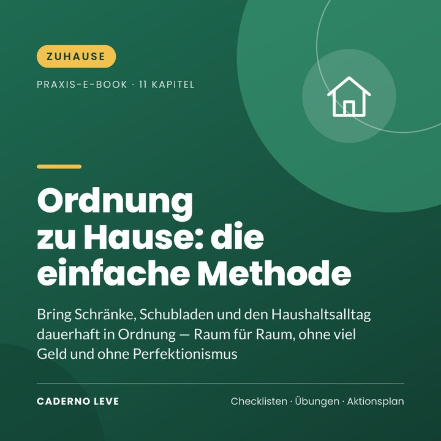
Bring Schränke, Schubladen und den Haushaltsalltag mit einer Methode in 4 Schritten in Ordnung: ausmisten, gruppieren, Platz geben und dranbleiben. Raum für Raum, mit wenig Geld.
Schnelle, effiziente Putzroutine: die richtige Reihenfolge, ein Grundset, Sicherheit mit Reinigungsmitteln, tägliche, wöchentliche und monatliche Routinen und Tricks für jeden Raum.
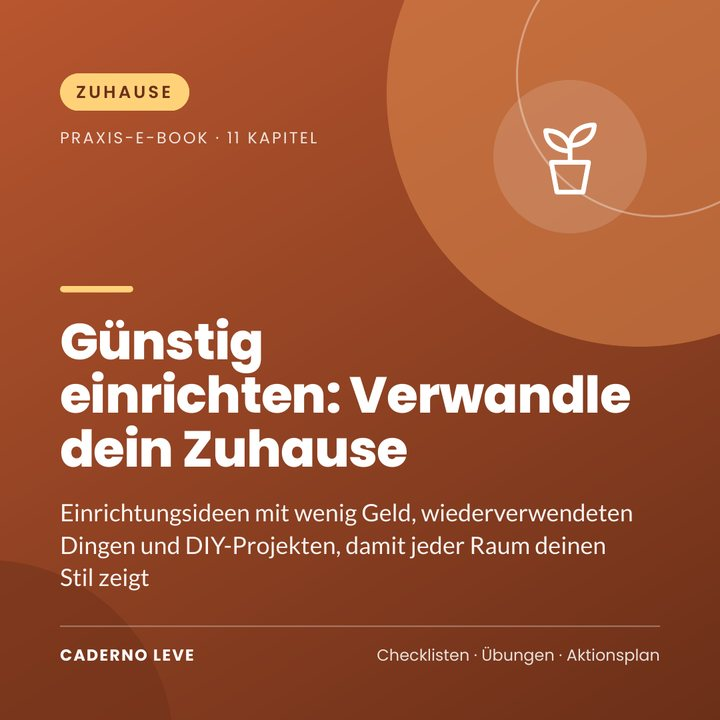
Einrichtungsideen mit wenig Geld: Stil, Farben, Umstellen, Beleuchtung, Streichen, aufgearbeitete Möbel, Wände, Pflanzen und Textilien, mit Optionen für Mietwohnungen.
Der Kauf läuft über Kiwify. Sobald die Zahlung bestätigt ist, schaltet Kiwify den Zugriff auf das PDF frei und schickt dir die Anleitung an die beim Kauf angegebene E-Mail-Adresse.
Als PDF (A4). Du kannst es auf Handy, Tablet oder Computer lesen und die Arbeitsblätter ausdrucken.
Jedes E-Book kostet R$ 27,90. Der Preis ist in brasilianischen Real (BRL) festgelegt, beim Bezahlen siehst du den Betrag in deiner Währung. Die verfügbaren Zahlungsarten findest du auf der Bezahlseite von Kiwify.
Nein. Die Inhalte dienen der Information und Selbstfürsorge. Bei Fragen zu Gesundheit, seelischer Gesundheit, Finanzen oder Recht wende dich bitte an Fachleute. Wenn es dir seelisch sehr schlecht geht, wende dich an eine Krisen- oder Seelsorge-Hotline in deinem Land; im Notfall wähle die örtliche Notrufnummer.
Per E-Mail an contato@seudominio.com.br.